智能控制系统实践自出复习题参考答案
电机是一种机电能量转换或信号转换的电磁机械装置，电机是符合电磁感应定律运行的机械装置，电机按照控制作用来改变输出。发电机生产电能。变压器进行电压变换。电动机是主要动力设备。控制电机应用于控制系统。
定转子极数一定要相等，否则作用在转子上的合成电磁转矩为0
定子： 1、主磁极 作用：建立主磁场。 构成：主极铁心和套装在铁心上的励磁绕组。 2、机座 作用：主磁路的一部分；电机的结构框架。 构成：用厚钢板弯成筒形焊成或铸钢件制成。 3、电刷装置 作用：对电枢电路的引出（或引入）装置。 构成：电刷、刷盒、刷杆和连线等。 转子： 4、换向器 作用：与电刷配合逆变（电动机）或整流（发电机）。 构成：由许多燕尾形的换向片排列成一个圆筒，片间用V形云母绝缘，两端用两个形环夹紧而构成。 5、电枢铁心 作用：主磁路的一部分；电枢绕组的支撑部件。 构成：用厚度0.2~0.5㎜，冲有齿、槽的硅钢片叠压夹紧而成。 6、电枢绕组 作用：直流电机的电路部分。 构成：用绝缘的圆形或矩形截面导线绕成，上下层线圈间及线圈与电枢铁心间绝缘，并用槽楔压紧。 电枢绕组是直流电机电路部分，是机电能量转换枢纽(产生电动势和电磁转矩)。 电枢绕组构成原则： （1）产生最大的感应电势； （2）可以承载一定的电流； （3）结构简单； （4）节约有色金属。
永磁式和励磁式
自励和他励，自励又包含串并复。
叠绕组、波绕组
元件数=换向片数=槽数，极对数=支路对数=电刷对数
必须使用闭合式绕组，即从某一线圈边出发，按一定规律依次串联所有线圈边后，再回到出发点，自行构成一个闭合回路。
一个主磁极在电枢表面所跨的距离或角度或槽数。
将各N、S极各自串联为一条支路，因此总有支路对数为1，理论上只需要一对电刷即可工作，但为了减小平均电流密度仍采用全额电刷，即电刷对数等于极对数
指电枢电流为0时，只由励磁绕组电流单独作用产生的磁场，也叫主极磁场
主磁通是指磁力线由N极出来，经气隙、电枢齿部、电枢铁心的铁轭、电枢齿 部、气隙进入S极，再经定子铁轭回到N极。即经过主此路的磁通。漏磁通是指磁力线不进入电枢铁心，直接经过气隙、相邻磁极或定子铁轭形成闭合回路。即不经过主磁路的磁通。主磁通约占全部磁通的80%。
空载时，励磁磁动势主要消耗在气隙上。当忽略铁磁材料的磁阻时，主磁极下气隙磁通密度的分布就取决于气隙的大小和形状。
平顶波
三角波，马鞍波，因为磁极之间气隙增长的很快。此处注意磁动势的峰值点位置。
在膝点，此时能得到较大磁通量但不至于过分增加励磁磁动势
电枢绕组通电时产生的磁场对气隙磁场产生的影响
使气隙磁场发生畸变，对主磁场起到去磁作用
直流电机某个元件经过电刷，从一条支路换到另一条支路过程中，元件被电刷短路，元件内电流方向发生改变的过程称为换向。电枢绕组中每个元件在经过电刷时都要经历换向过程换向过程，换向不良会在电刷和换向片中产生电火花，有可能损坏电机，除了电磁原因外，电火花还有机械的原因。此外换向过程中还有电化学、电热学的现象。 削弱电火花的方法有：
（1）移动电刷到物理中性面上，此处磁动势最弱，切割电动势最小，但实际效果受到负载的影响；
（2）在几何中性线处加装磁极以产生换向磁动势抵消电枢反应磁动势；
（3）使用合适的电刷以改善换向片和电刷的接触。
力矩由电流决定，电流由负载决定，转速由电压和负载决定，根本参数和最重要的参数是电势系数
根本是控制加速度，通过调节施加的力和力矩产生期望的加速度。
从原理上讲，任何电机既可作为发电机，也可作为电动机运行，这就是电机的可逆性。
调速：人为改变直流电机工作条件，使电机的工作点偏移，与负载线的交点移动。 主要的调速方法：串电阻调速、弱磁调速、调压调速。 串电阻调速 优点：简单易实现 缺点：损耗大，低效率；降速调速，有级调速，机械特性变软，轻载时调速范围小 弱磁调速 优点：基速以上，额定电流以下，提高转速，高效率，恒功率 缺点：机械特性变软，调速范围不大 降压调速 优点：线性直线族、控制和调节特性好，易于无级调速、效率高 缺点：基速以下，需要调压电源
将转速力矩曲线和电路图结合起来研究，注意纵截距代表外加电压： 电动运行：外加电压大于感应电势，电流与感应电势方向相反。 能耗制动：无外加电压。 反接制动：外加电压和感应电势同方向，电流与感应电势方向相同。 再生制动：外加电压小于感应电势，电流与感应电势方向相同。
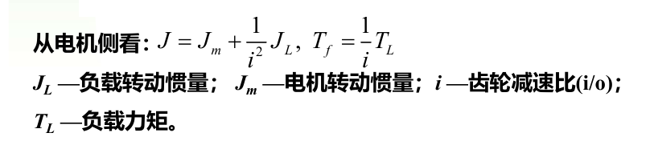 峰值力矩—加速度（惯性）力矩+阻力矩
额定力矩：电机长时间运行允许的最大电流
额定转速：转矩*转速=功率
力矩常数Kt：电流
电势常数Ke：电压
尺寸、质量与接口形式
对时间的均方根。

惯量小、动作快反应快、过载能力大、调速范围宽；低速力矩大、波动小，运行平稳；低噪音，高效率。
旋转磁场；机械式和电气式，前者是拖着磁极转，后者向多相对称绕组中通入多相对称交流电
交流电机中，串联在一起的一组线圈称为一相；极对数( p )：一相绕组通直流电时形成的磁场的极数/2
脉振磁动势，旋转磁动势
磁场旋转的速度，数值上等于交流电的频率。
磁场的转向与通入绕组的三相电流相序相关。总是由带有超前电流的绕组转向带有滞后电流的绕组。
改变电流相序（对调任意两相）即可改变旋转磁场的转向
视相绕组电流大小而定，当某相电流达到正的最大值时，合成磁场方向就与该相绕组轴线重合
不对。在空间（如气隙）中各点处，磁通密度的强度和方向随时间变化，但磁场本身并没有移动或旋转，移动或旋转的仅是磁场的分布形态，确切的说法应该是磁场的行波，相应的旋转速度为相位速度。单相绕组产生的脉振磁场对应于驻波
交流电机。结构简单、坚固耐用、制造容易、运行可靠、使用寿命长、易于维修、价格低廉等极为突出的优点
定子铁心由定子冲片（硅钢片）叠压装配而成，并固定在基座内，定子铁心槽内嵌放着定子绕组，由铜导线制成；转子结构分为鼠笼式和绕线式，转子铁心也由硅钢片叠压制成，转子绕组通过短路环构成闭合线圈。异步电动机又称感应电动机
电动机状态：转子与磁场同向旋转，但转速低于同步转速。假设磁场不动，则转子导体反向切割磁场，产生感应电动势，导体短路，产生同向电流。电流产生的转矩与转子旋转方向相同，转矩为驱动力矩。
发电机状态：转子由原动机驱动，转速高于同步转速。转子导体切割磁场情形与 电动机时相反，感应电动势和电流情形也相反。电磁转矩为制动力矩，原动机驱动力矩大于转子电磁转矩，通过电磁感应由定子绕组输出电功率。
电磁制动状态： 由于机械等原因转子逆着旋转磁场方向旋转。转子导体切割磁场情形与电动机时相同，感应电动势和电流方向也相同。电磁转矩方向也与电动机时相同，但由于转子转向改变，电磁转矩为转子的制动力矩。
和同步转速一致。因为转子磁动势在空间中的转速是相对转子的转速加上转子转速，恰好等于同步转速。这确保其在任何情况下都能产生恒定的电磁转矩。
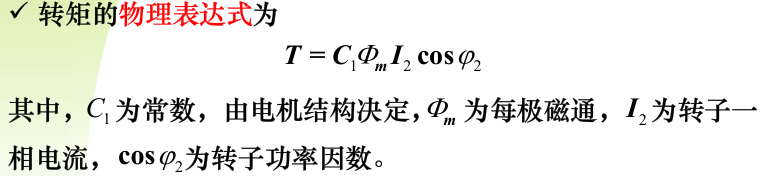 
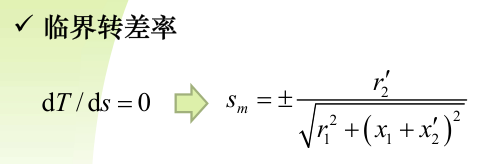 
 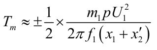
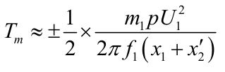1.8~3.0，起重、冶金机械用的三相异步电机，对过载能力的要求还要更高，该参数在电机参数表中给出。
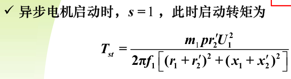 
变极调速：
由机械特性可知，变极调速时电动机的转速几乎是成倍的变化，因此调速的平滑性差，但是稳定性较好，特别是低速起动转矩大。
具有较硬的机械特性，稳定性良好；
不增加转差损耗，效率高；
接线简单、控制方便、价格低；
有级调速，级差较大，不能获得平滑调速。
适用：不需要无级调速的生产机械，如若干机床、升降机、起重设备等。
变转差率调速：
改变定子电压调速
转差率s随电压下降而增大，从而转速下降。 适用于转子电阻大的异步电机，恒转矩负载，调速范围宽。 不适用于普通异步电机，恒转矩负载，稳定运行区很小，转速变化太小，但对于非恒转矩负载，如通风机负载，可显著扩大调速范围。
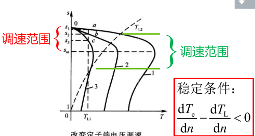 转子串接电阻调速（只适用于绕线型感应电机） 转差率s由于串入电阻而增大，从而转速下降。 优点：方法简单，设备投资不高，工作可靠。 缺点：机械特性变软，调速能耗较大，有级调速。 应用：主要应用于对调速性能要求不高的场合，如运输、起重机械等。
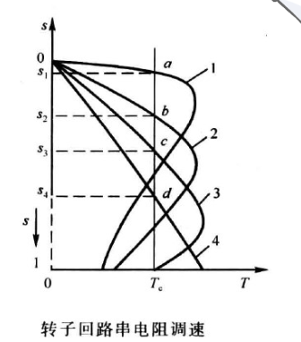 变频调速
变频调速能够应用在大部分的电机拖动场合，由于它能提供精确的速度控制，因此可以方便地控制机械传动的上升、下降和变速运行。变频应用可以大大提高工艺的高效性（变速不依赖于机械部分），同时可以比原来的定速运行电机更加节能
特点： （1）控制电机的启动电流，降低电力线路电压波动，启动时需要的功率更低； （2）获得可控的加、减速功能和较好的力矩控制特性，获得良好的调速特性； （3）显著提高运行效率，节能明显； （4）减少机械传动部件，实现直接驱动。
无刷直流电机、永磁同步电机；转子使用永磁体激磁，定子上设置多相对称交流绕组。根据驱动波形区分，无刷直流电机绕组方波驱动，多采用整距集中绕组以获得梯形反电势波形，而正弦波驱动永磁同步电机绕组采用分布、短距、分数槽等措施，以获得正弦形反电势波形。
采用永磁体激磁，基本无铜损和铁损，无滑环和电刷摩擦损耗，容量相同时电机的体积小、重量轻，效率高； 定子生成磁场对转子位置实现闭环的磁场定向控制，电流成分可控，控制特性好，功率因数高； 转动惯量小，允许转矩大，可获得较高的加速度和过载能力，动态性能好；结构紧凑，无需维护，运行可靠； 正弦波形的永磁同步伺服电机系统，需要精密的转子位置传感器和矢量控制驱动器，成本较高。
无刷直流电机系统和直流电机系统在原理上具有相同的描述方程，运行和控制特性相同。
存在换向力矩波动的问题。因为在换向过程中，不能实现电流波形为纯方波
矢量控制和直接转矩控制。矢量控制利用电机转子位置传感器，可以准确地实现激磁和力矩电流的解耦控制，易于实现良好的动静态响应指标。直接转矩控制省略了昂贵的位置传感器，而代之以控制算法实现磁场位置的预估，降低了成本，成为电机控制研究的热点，但当前直接转矩控制所实现的控制性能还不能与矢量控制媲美。
由于采用了永磁材料磁极，特别是采用了稀土金属永磁材料，因此容量相同时 电机的体积小、重量轻； 转子没有铜损和铁损，又没有滑环和电刷的摩擦损耗，运行效率高； 定子生成磁场对转子位置实现闭环的磁场定向控制，电流成分可控，控制特性 好，功率因数高； 转动惯量小，允许脉冲转矩大，可获得较高的加速度和过载能力，动态性能好； 结构紧凑，运行可靠，无需维护； 电机伺服系统相对复杂，成本高。
步进电动机是一种将电脉冲信号转换成机械位移的机电执行元件。取决于输入脉冲个数、输入脉冲频率
定子——由硅钢片叠成，装上一定相数的控制绕组，由环形分配器送来电脉冲，对多相定子绕组轮流励磁；转子——用硅钢片叠成或软磁性材料做成的凸极结构，跟据步进电机转子实现方式，分为反应式步进电机（转子本身无励磁绕组）、永磁式步进电机（用永久磁铁做转子）、混合式步进电机
由于磁力线总是要通过磁阻最小的路径闭合，因此会在磁力线扭曲时产生切向力而形成磁阻转矩，使转子转动，转、定子的齿对齐后停止转动
有三相单三拍、三相双三拍、三相单双六拍等，三相双三拍和三相单双六拍较三相单三拍稳定，因此较常采用。

反应式/磁阻式：定转子开小齿，转子无绕组，结构简单，生产成本低，步距角小，但性能差，80年代后期已逐渐被淘汰。
永磁式：转子的极数=每相定子极数，不开小齿，出力大，动态性能好，但步距角大，一般为7.5度-45度。
混合式：结合了永磁式和反应式的优点，步距角小，出力大，动态性能好，混合式步进电机应用最为广泛。
混合式步进电机
错齿
优点： 脉冲控制，适用于数字化计算机控制，脉冲–位移，脉冲频率–转速； 不用电刷和换向器，结构简单，坚固耐用，免维护； 无累积定位误差； 控制原理和控制方法简单，可以方便地构成低成本的开环位置/速率伺服系统。
缺点： 固定步长（步距角）的增量式运动； 效率低； 需要专用驱动器； 功率小，不宜驱动大的机械装置（惯量/阻力矩）； 响应速度低 （运行速度不低）； 定位有误差，只适于中/低精度要求的位置/速度伺服； 驱动不当时，在某些运行范围内发生振荡。


校正元件：改善系统性能使其稳定可靠的工作并达到规定的性能指标
放大元件：提供能量，放大微弱控制信号驱动执行元件
执行元件：驱动被控对象，控制或改变被控量
测量元件：检测被控量，并转换为另一种容易处理或检测的量
检测一种物理量，并转换为另一种容易处理或检测的量。功能是检测和转换，处理即放大加减微分滤波存储传送，容易被处理的物理量一般指电信号
理想特性：输入和输出为一一对应的线性关系。
静态特性：稳态条件下输入量和输出量之间的关系，用函数或曲线族表示，特性中不含变量对时间的微分。
动态特性：输入量和输出量都随时间变化的关系，其数学关系式中有变量对时间的微分项（一般指输出变量对时间的微分项，微分的阶次对应于测量元件作为动态系统的阶次）。动态特性可以用测量元件的传递函数或频率特性来表示。
变换函数：描述静特性的数学方程，结构和形式一般是在分析或实验的基础上建立的，其参数多在实际标定实验中，利用统计分析和曲线拟合的方法予以确定
例如理论拟合、过零拟合、端点拟合、端点平移拟合，最小二乘拟合，最小二乘用的最多。
灵敏度：输出量的微小增量与输入量微小增量的比值，为变换函数的一阶导数或静特性曲线的斜率
线性度（或非线性误差）：静特性曲线偏离某种拟合直线或规定直线的程度。

滞环：测量元件正反行程中输入、输出曲线不重合的现象，它由上升分支和下降分支组成。对应同一输入量，两个分支所对应的输出不同。
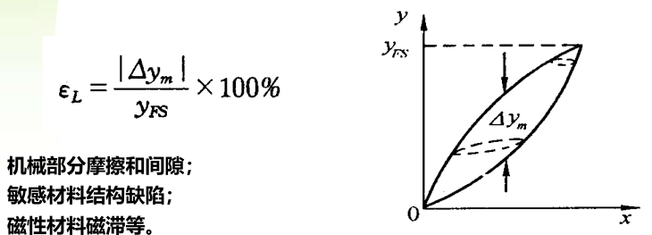 重复性误差：输入按同一方向作全量程连续多次变化时的误差。
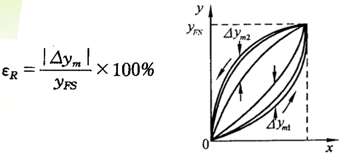 静态误差：全量程范围内，测量元件输出值与理论值的偏离误差。
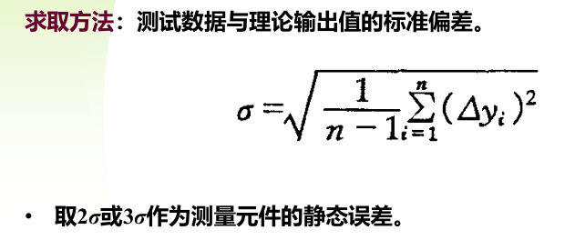 测量范围和量程：测量元件能够满足规定精度时检测到的最小输入量和最大输入量，称为测量范围。测量元件能够满足规定精度时检测到的最大输入量和最小输入量之差，称为量程。 分辨率和分辨力：分辨率和分辩力都是表示传感器能检测的被测量最小值的性能指标。分辨率是以满量程的百分数来表示，无量纲；分辨力以被测量的实际最小输出值来表示，有量纲。实际应用中分辨率也经常指分辨力。 稳定性：传感器在较长工作时间内保持其性能参数的能力。漂移是指在外界的干扰下，在一定时间间隔内，传感器输出量发生与输入量无关的或不需要的变化，漂移包括零点漂移和灵敏度漂移等。
动态特性相关指标，时域：最大超调量、上升时间、调整时间；频域：带宽、频率响应范围、临界频率等。
静态性能要求：量程、精度、分辨率。
动态性能要求：频域：测量的带宽高于系统带宽的3~5倍。时域：延时短、响应快。
环境要求：温度、湿度、化学度、冲击振动等。
接口要求：信号形式，外形结构尺寸等。
熟悉程度：尽量使用熟悉的元件。
其它要求：价格、可靠性、维护等。 原则：满足指标要求的前提下用最成熟的测量元件。
旋转变压器（Resolver）是一种电磁式传感器，它是一种测量角度用 的小型交流电机（微特电机，控制电机），用来测量旋转物体的转轴 角位移和角速度。旋转变压器由定子和转子组成：定子绕组作为变压器的原边，接受励磁电压；转子绕组作为变压器的副边，通过电磁耦合得到感应电压。
作为测量元件：测量转角和转角差。作为解算元件：用于坐标运算和三角运算。
误差产生原因：绕组谐波、齿槽、磁路饱和、材料、制造工艺等。改进措施：提高加工工艺、原副边补偿、正弦绕组、短距绕组、斜槽。
由于原边电流不能产生交轴磁动势，无法抵消转子负载电流磁密（脉振磁场）的交轴分量，导致输出特性误差。采取原边补偿、副边补偿等措施


优点： 构造简单，成本较低。 对使用环境要求低（噪声、振动、冲击、温度）。 无接触测量，可靠性高，寿命长。 适合高速，最高可达60000r/min（优于光电传感器）。 有绝对位置信号输出。 处理电路相对简单。 除了测角外，还可以用于解算，用途多。 缺点： 作为传感器，测量精度相对较低。
①旋转变压器应尽可能在接近空载的状态下工作，因此负载阻抗应远大于旋转变压器的输出阻抗。两者的比值越大，输出电压的畸变就越小。 ②使用时首先要准确地调准零位，否则会增加误差，降低精度。 ③只用一相励磁绕组时，另一相绕组应短路或接一个与励磁电源内阻相等的阻抗。 ④两相励磁绕组同时励磁时，即只能采用副边补偿方式时，两相输出绕组的负载阻抗应尽可能相等。 ⑤分体式旋转变压器安装时，要尽量保证定、转子同心。 ⑥激磁电压频率要和最大速度匹配。 ⑦结构尺寸要匹配，转子惯量要满足要求。 ⑧注意励磁方式，不同的励磁方式需要不同的解调电路。 ⑨注意使用环境，湿度、振动等。
感应同步器（Inductosyn）是一种电磁式位置检测元件，是一种将角位移或线位移变换为电信号的高精度测量元件。
按其结构特点可分为直线式和旋转式两种，原理上和多级旋转变压器相似，不同点在于结构上的运动部分和静止部分均采用了印制绕组。
直线式感应同步器：由定尺和滑尺两部分组成，滑尺比定尺短。
高精度感应同步器多采用非铁磁材料作基板，如采用铝基材料、玻璃等。
旋转式感应同步器：由定子和转子组成。绕组是由辐射状的导片组成。转子上的绕组是单相连续绕组，其径向导片数也就是极数。


鉴相型处理方式、鉴幅型处理方式。
整形电路，触发器，脉冲源、波门、计数器，以脉冲计数的方法求出相位差θe；指令角θ1是设定的，代表感应同步器的激磁电压幅值，函数变压器的副端有很多抽头，再配上电子开关线路就可以实现电压的改变，幅值为0时候，则可求出θe=θ1+kπ，想办法保证k=0即可。
具有很高的精度和分辨率，测量精度远高于制造精度（多节距同时参加工作，误差平均效应减小了局部误差的影响）；抗干扰能力强；使用寿命长，维护简单；可以用于长距离位移测量；工艺性好，成本较低，便于复制和成批生产
缺点：输出信号弱，信号处理麻烦，配套信号处理设备（数显表）复杂，价格高。 多数为分装式，安装精度要求相对较高。 使用时必须进行电路参数调整，才能满足精度要求。 单通道多对极感应同步器输出信号为增量方式，必须进行寻零操作。
安装时定转子之间距离要准确，小于0.25mm。 长距离测试拼接时要保证拼接精度。 在0°~360°范围内，多极旋转变压器/感应同步器输出电压是周期函数，从输出 电压不能唯一确定转角，单通道多极感应同步器要设计寻零功能。 输出信号长距离传输时，感应同步器侧要加前置放大电路。 信号线要用双绞屏蔽线，避免和强电平行走线，要正确接地。 要采取措施抑制大功率器件的电磁干扰。
光电编码器（Photoelectric Encoder）是一种通过光电转换将输出轴上的机械几何位移量转换成脉冲或数字量的高精度测量元件。根据其刻度方法及信号输出形式，可分为增量式、绝对式以及混合式三种。
增量式编码器大圆盘上刻有均匀分布的辐射状窄缝，分布周期称为节距。两组检测窄缝节距和圆盘上相同，窄缝的位置相隔1/4节距，两个输出信号在相位上相差90°

只作速度控制，可不要求寻零
用于位置控制时，需要寻零。当转角不受限时，向一个方向转，一圈之内就可找到零位脉冲。转角受限时，向一个方向转，若转到限位还未找到就反转，要求在可旋转范围内须存在零位脉冲
多条零位刻线（不等间距分配）可有效缩短寻零时间
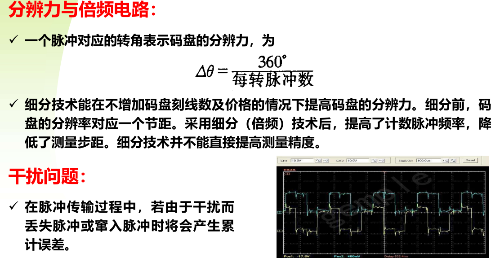 优点：精度高（用倍频电路可以提高分辨率）。 构造简单，成本较低。 既适合测角也适合测速。 无接触测量，可靠性高，寿命长。
缺点： 开机后先要寻零。 在脉冲传输过程中，干扰产生累计误差。 要考虑最大转速和分辨率的矛盾，要考虑计数器溢出问题。
绝对式光电编码器是一种绝对角度位置检测装置，它的位置输出信号是某种制式的数码信号，表示当前绝对位置信息。
结构上包含三部分：旋转的码盘、光源和光电敏感元件，每个码道上按一定规律分布着透明和不透明区。光源的光通过光学系统，穿过码盘的透光区被窄缝后面的光敏元件接收，输出为“1”；若被不透明区遮挡，光敏元件输出为“0”。各个码道的输出编码组合就表示绝对式编码器的转角位置。问题：两个位置交换处可能产生很大的误差!采用循环码（格雷码）来解决，转换为自然二进制需要附加逻辑处理转换。
优点：精度高，无接触，寿命长。 开机不需要寻零。 没有累计误差。 不需要计数器、允许转速高。 缺点： 结构复杂，体积大，供电电源要可靠，注意长线传输时压降。 耗电大于同分辨率的增量码盘，需考虑对于误码、应用零点的处理。 价格贵。
基本结构是绝对式码盘，但码道较少，精度较低，起到“粗测”的作用；内部具有增量式码盘结构，起到“精测”的作用。
从码盘输出到信号处理装置，一通电就知道绝对位置，不必“寻零”。采用增量码盘结构，可以对输出信号进行倍频处理来提高精度。
体积要比同精度的绝对值码盘小。
需求分析、方案设计、采购设计安装集成、数学建模（简化与处理）、控制器设计与仿真、系统调试、系统测试
包括功能分析，即被控量和控制量，指标分析，即需要达到什么性能，工作条件分析，即环境（外扰），工况（负载变化），各种约束和限制（空间、功率）
结构、驱动、控制、测量方案。考虑因素：指标、成本、可靠性、维护性、安全性、电磁兼容性、环境、熟悉程度等
机理模型推导（理论分析和实验建模）模型降阶，非线性处理，不确定性描述，平均化等；模型验证及参数辨识
众多控制方法。

控制器编程实现，实际系统调试测试；根据测试结果对控制器进行修改，并最终满足要求
一般利用第三方仪器设备，参考一些标准和规范来进行测试
执行器都有功率等条件的限制系统能达到的性能与输入信号相关
根据典型输入信号的幅值、变化率及二阶或高阶导数确定元件的参数
根据典型输入信号的幅值、变化率及二阶或高阶导数计算跟踪误差，进行控制设计
确定输入信号的频带以及系统的带宽
典型输入信号根据系统预定执行的任务来确定，在确定典型输入信号的时候应该对实际情况做一些简化便于分析和计算。
采用差分和DFT
基于典型的输入信号分析，可以指导元部件选型；
基于典型的输入信号分析，可以对模型进行简化；
基于典型的输入信号分析，可以确定带宽和频响指标；
通过对输入和输出信号的频谱分析测得系统的频率特性；
可以用于选取典型的测试信号；
分析信号中各种特殊的频率成分（如谐振频率，波动力矩，间隙等）.
揭示了周期信号可以被分解为若干正弦信号加权和、非周期信号可以被分解为若干正弦信号加权积分。
为了数学表述和计算的方便。
函数绝对可积、任意有限区间上仅有限个间断点、极值点。注意这是个充分非必要条件，可以举出阶跃、符号函数作为反例。
冲激/脉冲信号

如果脉冲信号为系统的典型输入信号，可由给定T对应的频率特性确定实际系统的带宽指标； 如果要选择脉冲信号对系统进行测试，可根据要求测试的频率选择T的宽度
低频段。观察阶跃的形式发现其只有直流分量和衰减的高频分量。
有限长度，非周期，没有解析表达式，离散。使用有限长度离散信号DFT或FFT
N×N和 N×logN
按时间区分，时间无穷远时就是稳态误差，静态误差即误差为常数
由输入指令、系统结构等引起的稳态误差称为原理性稳态误差，由系统中各种非线性因素引起的误差叫做附加性误差，也叫非线性误差
偏差为r-y，误差为c-y，在反馈控制中，二者相差一个反馈环节H。
计算稳态误差的前提是系统稳定。
静态误差与系统写为尾一标准型时的开环增益大小有关，与积分器个数有关，与外部输入有关
静态误差系数适用的条件是系统稳定，且输入信号为阶跃、斜坡、加速度之一或其线性组合。
静态误差与输入信号的形式有关、与系统开环传递函数写作尾一标准形时的开环增益有关，与系统的型别有关
滞后环节主要利用对高频幅值的衰减来提高低频增益，从而降低误差。应用时应该重新调整系统增益使调整前后剪切频率不变，这样就能达成提高系统低频增益的目的。提高相同的增益应该使用多个中心频率不同的小幅值之后环节，避免在局部损失过大的相位；要应用与低频。滞后环节可能降低相位裕度，引发条件稳定。条件稳定是指系统只在幅值满足一定条件时稳定。滞后环节处于低频，时间常数较大，因此误差收敛速度变慢，对于要求误差快速收敛的系统并不适用。
复合控制能完全消除由给定的输入产生的稳态误差，完全复现给定输入，要求满足有关条件。
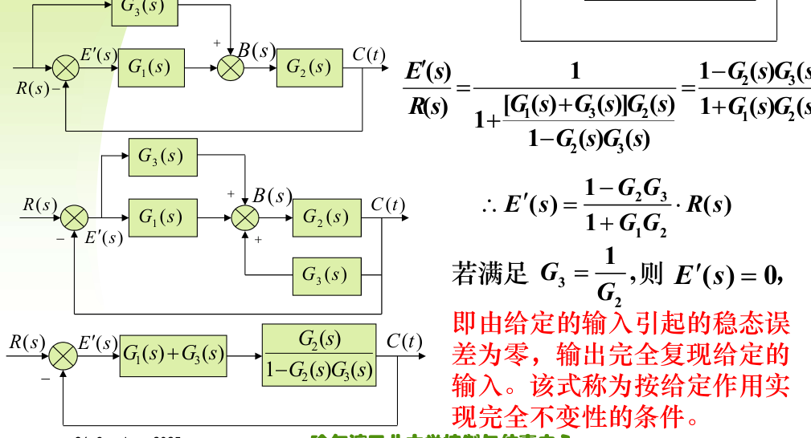 然而，一个是需要考虑物理可实现性的问题，即使物理可实现，这个结构也需要消耗较大的能量，因此实际中往往采用近似实现。
顺馈环节可以用来减小原理性误差，但对附加性误差不起作用，因其输入仅包含指令信息，而不包含任何反馈信息，属于开环控制。
顺馈环节的实现如果输入各阶导数不可用，可以考虑附加极点。
顺馈环节的结构和参数依赖于被控对象的精确模型，对被控对象的结构和参数摄动等不确定不具有鲁棒性，因此对不确定性较大的系统，应该避免使用。
对于给定典型信号输入静态误差无穷大的系统，必须增加系统型别
对于静差为非零常数的系统，0型可以考虑直接加积分，一型可以提高增益、加PI、加滞后来解决或改善；二型一般只能提高增益或加入滞后
顺馈可以减小原理性误差，但不能减小附加性误差，其物理可实现性、鲁棒性需要考虑，且有可能抬高系统闭环谐振峰
系统型别、增益都提高到极限之后，往往只能通过补偿方法来减小系统误差，即开环补偿，要求误差必须具有重复性。
动态误差系数法研究输入信号几乎为任意时间函数时系统稳态误差与时间的关系，因此动态误差系数又称广义误差系数。
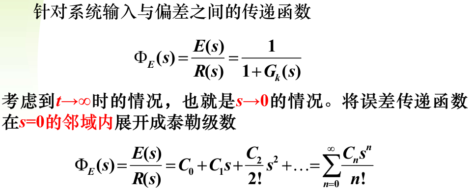 

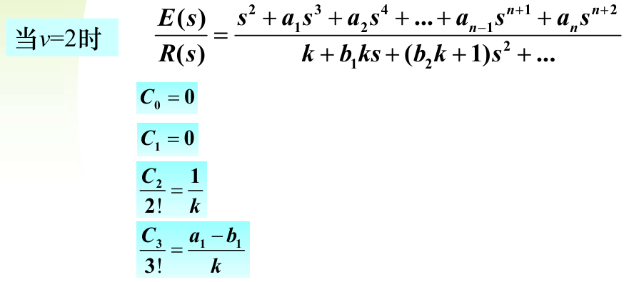 定义求导，计算复杂精度要求高，需要多个系数、被控对象比较简单可用
长除法只能提供有限系数，精度取决于使用的系数个数
图解法简单方便，适用于没有精确数学模型、只有对象bode图情况且精度要求不高的场合
低频模型法使用简单，对输入信号频带有要求，精度要求不高
输入信号中随时间趋于零的分量不应该被记入动态误差的计算！！
获取脉冲响应函数的方法： 解析推导
仿真（根据传递函数利用Matlab仿真）
实验（给实际系统注入脉冲信号获取）
利用Bode图，基于图解法进行求解。设计增益等、简化系统模型以建立系统的低频模型等。
必须要有脉冲响应函数（通过仿真或者实验的方法获得），还要进行求和计算，过程比较繁琐，优点是可以计算包含瞬态误差在内的整个时段的误差；
噪声是一种随机过程

马尔科夫随机过程：随机过程未来的进展和我们所取得的某一开始时刻有关，而与这时刻以前的特性无关
平稳随机过程：概率密度函数的形状不随时间而变化，即其形状不随时间轴上的计时起点而变化
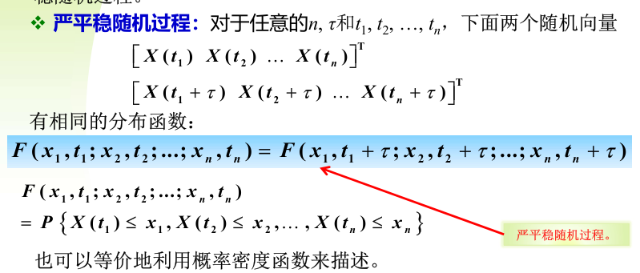

从随机过程的任意一个样本函数中可以获得其各种统计特性，因此对于具有遍历性的随机过程，只要有一个样本函数就可以辨识出它的所有数字特征。
满足遍历性的随机过程必须是平稳的，但并非所有的平稳随机过程都满足遍历性！
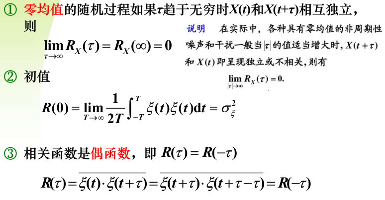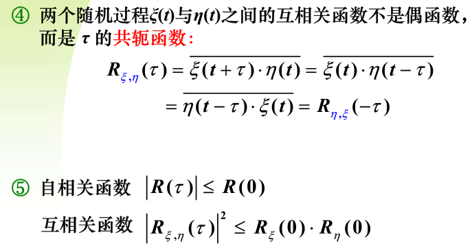

因为是宽平稳的，请查看宽平稳的定义。
非负定性
平稳随机过程的一个实现的平均功率。其等于信号在频率处的平均功率密度，因此也叫功率谱密度。
谱密度和自相关函数构成傅里叶变换对，前者是后者的傅里叶变换，这叫做维纳-辛钦关系。对于一个满足遍历性的平稳随机过程，可以用实验数据来求取其相关函数，然后用傅里叶变换得到谱密度函数。
可以把远大于系统带宽的噪声近似为白噪声处理

折中处理，最终使综合均方误差最小
系统的等效噪声带宽是指一个理想滤波器的带宽：在白噪声作用下，系统的均方输出与理想滤波器的均方输出相等。这里的理想滤波器特指其频率特性等于1，而在带宽外则完全截止
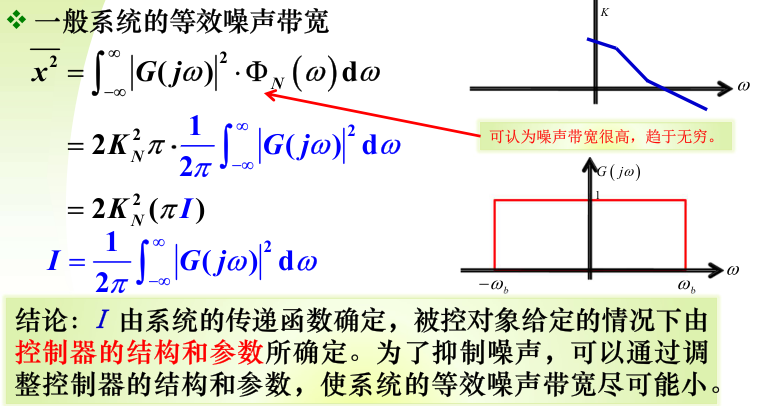 混在有用信号上的外加信号叫做噪声， 一般由测量引入，难以分离。除给定值之外，凡能引起被控量发生变化的因素，都可划入干扰的范围。干扰又称扰动，是对系统的输出产生不利影响的信号。如果扰动产生在系统内部，则称为内扰；产生在系统外部，则称为外扰。外扰是系统的输入量。
作用点不同：干扰和控制量的作用点一般相同，而噪声一般作用于测量元件上，使测量结果变差
作用机理不同，干扰一般直接作用于被控对象，改变被控量，噪声通常通过反馈回路混入反馈信号而间接影响被控量
特性不同，干扰信号大多可以估计和测量，频谱较窄，噪声一般为随机信号，频谱很宽
抑制方法不同，干扰信号可以通过多种方法抑制，而噪声一般只能通过降低系统等效噪声带宽来抑制，这与系统跟踪性能要求往往矛盾。
指导元器件选型、根据扰动的特点，确定抑制扰动的控制方法
主要包括扰动作用机理，如作用点，扰动建模，传递函数
扰动的定性分析，随机确定规律
定量分析，如幅值、导数、频谱
可以增加偏差到扰动作用点之间的增益或积分环节个数，增益不能任意增大，积分个数不能任意增加，否则影响系统稳定性
可以采用PI，滞后环节来减小扰动产生的误差，需要注意系统的稳定性
可以采用顺馈减小扰动产生的误差，需要扰动可测
对干扰更敏感的状态可测，则可采用多回路的方法抑制；（类似串级控制）
可以采用扰动观测器减小扰动产生的误差，需要拥有比较精确的被控对象数学模型
可以直接在控制量中进行补偿，要求扰动和状态量有确定的函数关系，且状态可测。
干扰观测器的基本思想是将外部干扰及模型参数变化造成的实际对象和名义模型之间输出的差异等笑道控制输入端，即估计出等效干扰，在控制中引入等效的补偿并实现对干扰的完全一致。
其带宽应该覆盖扰动和输入信号的频谱范围；在能够抑制扰动的基础上，其带宽应该尽可能小；为了物理可实现，其相对阶应该大于等于名义对象的相对阶；为了使Gyc尽快逼近标称模型，在工作频段内其幅值应该尽量接近1；为了避免噪声对输出的影响，高频幅值应该尽量接近0；如果假定模型摄动为乘性摄动，鲁棒稳定性条件为||△Q||<1
可能放大高频噪声,或在闭环系统中产生一个谐振峰值.
闭环传递函数相对变化率/对象传递函数相对变化率。当参数只在小范围摄动时，可以采用系统灵敏度来度量系统的稳定性。系统灵敏度是当变化量为微小的增量时，系统传递函数的变化率与对象传递函数在标称模型处的变化率之比。
闭环反馈系统最根本的优点是减小了扰动和摄动对系统的影响,即降低了灵敏度.
表征了系统的相对稳定性,一般取1.2~2,表征了系统误差对扰动的响应,表征了系统输出对噪声的响应
受到bode积分定理的制约,不能任意设计.
线性控制方法和线性系统.若使用一些非线性控制方法或在非线性控制系统中,可能不起效.
系统不确定性是指设计使用的标称系统于实际系统之间的差别.
系统的不确定性产生的原因是:
系统的参数发生了变化
为了方便或单纯是认知度不足,高频存在未建模特性
人为进行了模型的简化,未能完全反应真实物理系统,如便于设计,进行了降阶和线性化.
在控制系统的物理实现过程中,引入了不确定性
如果模型不精确或模型变化后，系统仍然保持稳定的能力
模型的变化和不精确所造成的闭环系统的性能改变可容忍,就是鲁棒控制系统
 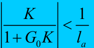
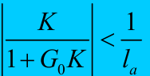名义系统稳定 基本
低频性能满足要求 精度
高频特性满足噪声误差和不确定性要求 带宽

带宽较窄，有时不能有效抑制扰动；二型系统相位滞后大，在大信号输入时，可能陷入条件稳定。
因为伺服系统对跟踪精度、响应速度等指标有要求，往往对增益和带宽进行了一定设计，而经过设计的伺服系统，其稳定性可能不能得到保障，此时需要对其进行校正来保证稳定性。
相关函数是零均值的平稳随机过程的均方差函数，谱密度是信号的标本函数信号功率在频率上的分布。后者是前者的傅里叶变换。
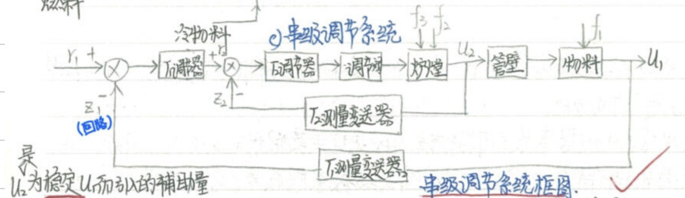 主被控参数：炉出口温度
副被控参数（辅助变量）：炉膛温度
主被控过程：u2 in，u1 out
副被控过程：r2 in ，u2 out
一次扰动：f1，二次扰动：f2
理论上来说，这并不是一个非常强的约束：可以在无穷的频率上令灵敏度函数稍大于1，因此仍可以使低频段灵敏度足够小而灵敏度函数的最大值又不会过大。
但是考虑到噪声、不确定性等因素，超出一定频率范围，系统的实际特性是很快衰减的，系统存在一个可用的频率范围，所以这一想法并不现实。
若系统稳定，则对输入的响应一段时间后区域稳定，误差在一定时间后趋于叫小范围，即误差主要体现在响应的初值阶段，动态误差系数计算误差时进极端有限项即可，系统趋近稳定时，误差也很快趋于0。
是指在实际工作时的误差大小。
 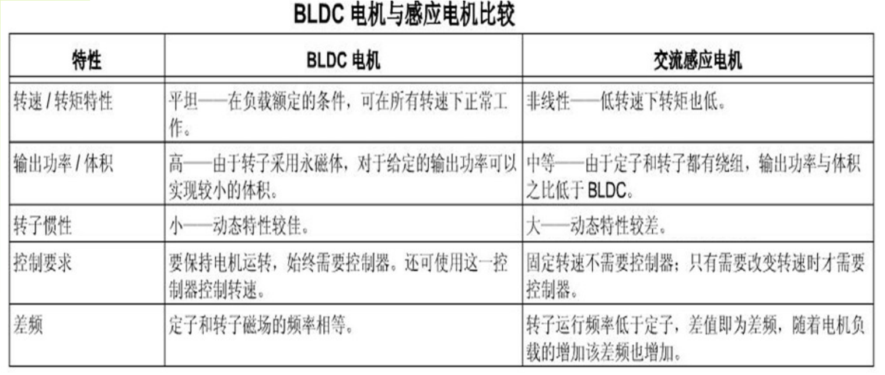
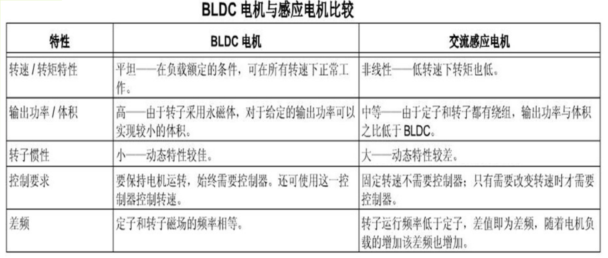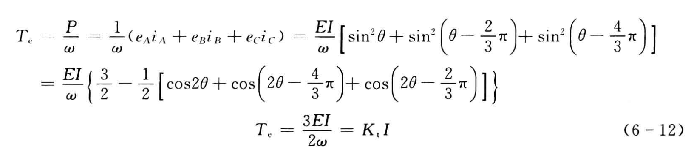 -HGK/1+HGK，当HGK很大时，特性等于-1，即此时H变化直接影响系统的响应特性，因此保持反馈部分不因环境的改变而改变，或者说保持反馈增益为常数，是非常重要的。
因为其数值正好,不太小,大于信号频谱,但又不太大,不会触及鲁棒稳定性界限.如果其频率数值很大或很小,完全可以基于原则选择任何合适的频率作为转折频率.
电枢绕组中电流的换向是借助于转子位置传感器和电子开关线路来实现的。三个霍尔传感器分别位于三相绕组轴线位置，作用范围是±90°，处于转子N极下输出高电平，S极下输出低电平，使得定子绕组依次通电产生一个步进式旋转磁场，定转子之间产生一个电磁转矩Tsinθ带动永磁转子转动。
对象的精确数学模型往往难以得到；即使得到，其逆往往不可物理实现；即使实现了，噪声可能导致控制性能下降。
背题去。
扰动机理分析：作用点，扰动建模，传递函数；定性分析：随机、确定、规律；定量分析：幅值，导数，频谱。
卷积法的优点：可以得到系统在一定输入信号下任意时刻的误差，包括瞬态误差，缺点是必须通过解析、实验或仿真手段获得系统的脉冲响应函数
动态误差系数法的优点：计算比较简单，使用比较方便。缺点是精度较低，使用时必须给定指令信号及其各阶导数，且结果中只包含稳态误差。
前者是后者的特例，后者是前者的推广；
前者只适用于阶跃、斜坡、加速度三种信号及其线性组合，后者适用于任何输入信号；
二者都只能计算出稳态误差；
二者都只与系统的结构、参数等有关，与输入信号的幅值、形式无关。
若稳态误差无穷大，考虑增加型别。
若稳态误差为非零常数，若为1型系统，可以考虑增加增益、提高型别，即使用PI控制，滞后校正；若为2型系统，只能考虑增加增益，使用滞后校正。
可以考虑使用顺馈方法来降低误差，误差为0的条件称为不变性条件，只要其等于被控对象的逆即可，注意：顺馈是开环校正，只能削弱原理性误差，对附加性误差无作用；被控对象的数学模型难以得到，即使得到了，其逆也往往不可物理实现，如果输入信号若干阶导数不可用，则需要通过附加极点的方式近似实现；实现完成了，顺馈作为开环控制方式，不具有鲁棒性，因此对于模型摄动较大的系统，需要谨慎考虑
可以考虑使用补偿的方法，前提是系统的误差具有重复性，补偿有指令补偿和反馈补偿，也属于开环控制。
观察阶跃信号频谱知其以低频信号为主。
是一种无需精确数学模型的控制方法；
是一种反映了人类智慧能力的智能控制方法；
易于被人们接受；
采用不精确推理；
构造容易；
过窄实现不了指标要求，过宽实现困难，成本提高。
要求熟悉系统应用背景，能够确定系统的典型输入和干扰信号并分析其频率成分，进而确定对闭环系统带宽的要求。
前者越小，均方误差越小，后者越小，信号变化越小。
保持闭环系统稳定和动态特性的前提下改善系统精度。
同一个支路内的所有元件始终处于相同极性的磁极下；电枢产生的磁动势在空间中静止不动。
降低系统带宽。通过高频衰减特性来降低系统带宽。在大信号输入时，由于元件饱和效应导致增益下降，进而引发条件稳定，这是滞后校正的问题。
后者反馈校正特性不受负载的影响，具有较好的鲁棒性。
稳定性、干扰抑制、指令跟踪、不确定性灵敏度，噪声特性等诸多性质，与控制系统性能的优劣密切相关。
ω < ωc, |KG| > 1
最大限度地通过反馈校正来拓展系统带宽，避免使用顺溃和前置滤波这样的开环校正方式。
系统能够做到的带宽大小
系统元器件的带宽，执行器有时间常数限制、传感器有延迟和滞后、控制器采样有延迟；传动间隙、负载惯量；未建模的动态特性。
机械谐振。可以通过开环测出谐振特性并使用合适的滤波器加以补偿使补偿后对象特性bode图中谐振特性消失，也可以在开环校正时不做处理,闭环后出现谐振再进行补偿,对反馈信号进行傅里叶分析确定是否存在谐振,若存在则确定谐振频率并加以补偿直到谐振现象小时。前者更加规范，后者更加实用。
导致系统性能下降，甚至无法正常工作，增加功耗，降低电气和机械系统寿命。
若机械系统尚未设计，要求谐振频率高于五倍带宽，即对刚度提出要求；若机械系统已经设计完成，则要求带宽低于五分之一倍谐振频率。要求过高会导致系统结构复杂、成本高、甚至无法实现。有时设计指标很好，但是实测结果很差，此时必须从控制角度对谐振进行抑制。
谐振频率较低
谐振频率较高作为未建模的高频动态来处理时.这个固有频率是所有震动模态中频率最低的一个.
如果谐振频率较低,不能在设计中忽略
是.系统剪切频率一般都在谐振频率之前，因此添加带阻滤波器一定会损失剪切频率处的相角，减小系统的稳定裕度
滤波器的宽度一般要比谐振宽
在实际应用中，元部件老化、松动、惯量的变化等因素常常会引起谐振频率点的变化。所以，伺服系统使用过程中，谐振抑制是一项需要经常进行的维护性工作。
反馈控制.
使用滞后校正,如果系统不在指定的频段内穿过0dB线,就没有鲁棒性,实际系统将会不稳定.
应该使用超前校正(即微分比惯性),带宽过窄可能使稳态误差.
应该使用多次补偿小相角的方式,同时一次补偿的相角最多不应超过30°
可以使用顺溃或前置滤波等方法.
相对稳定性是指系统偏离稳定边界的程度,灵敏度函数能够真正反应它,它属于反馈特性
相对稳定性的指标有:超调量,相位裕度.
可能导致系统出现一个峰值,放大噪声，产生一个较大的谐振峰,导致鲁棒不稳定.
执行器的幅值限制(饱和)和变换速率限制(转换速率限制)
反馈回路失效,系统相当于开环
自平衡的,非自平衡的
前提是控制回路工作在线性范围内
当执行器达到其约束边界而进入饱和后，在系统误差的作用下，积分器的输出不断累积，导致整个控制器的输出可能会累积到很大的值，但执行器由于处于饱和状态而无法响应,积分器的累积值过大，必然会导致执行器退出饱和时间变长，而且控制器的输出回到饱和边界之内(线性范围)后，这一积分值作为初始条件，会导致很大的暂态响应.
会导致很大的暂态响应,严重影响系统性能,甚至使系统失稳.
保证执行器不会超出范围,对执行器要求过高，或导致性能不必要的下降;修改设计，应对约束,对于一定程度（如100%）的超出约束，可获得满意的效果。对于存在更严重的超出约束的情况，可能是由于针对指定的性能指标执行器选型不当,当执行器达到约束的边界时切断积分作用！
控制器的动态由对象的实际输入信号（执行器的实际输出）来驱动（误差直接驱动比例环节）；由对象的实际输入信号驱动时，控制器的动态是稳定的。
双正则的最小相位系统
Anti-Windup的思想是基于控制器输入信号，找到一个期望的控制器输入信号 来驱动控制器的动态部分
期望误差信号驱动的控制器不会超出实际控制量的限幅
不知道
存在
从闭环极点中选择(n)个最快的极点作为根
用来精确地跟随或复现某个过程的控制系统,伺服系统是使被控对象的位置、方位、状态等输出被控量能够跟随目标(或输入指令)的自动控制系统，一般指位置跟踪系统。伺服系统设计时要满足跟踪精度的要求。
稳定性、精准性和快速响应性,节能,机械运动,数学模型中一定有积分环节
只含有一个转折频率的一型系统,0.5~1
开环增益.
抑制可能的高频噪声,注意这不会影响等效噪声带宽.
抑制可能的高频噪声.等效噪声带宽反应的是白噪声的通过能力,然而现实中的噪声可能大多是高频噪声.
提高增益则必然导致带宽增大,带宽受到鲁棒稳定性条件的限制,因此增益较低,有时不能满足跟踪精度和响应速度的要求
将带宽和增益分开设计,可将带宽做到40-60,甚至100,增益可达到200-600.
$ps(\omega)=\frac {\theta_{\max}} {e_{\max}}$

可能需要输出量的若干阶导数,可能引起不稳定
基本II型系统是指只有一个转折频率的二型系统,1~2,不含1.
K=1时最小,但K=2时也没有增大很多
高精度
是生产实际.视实际系统能做到的带宽而定.
齿隙特性描述函数的负倒特性位于第三象限,二型系统的nyquist曲线也位于这里,二者相交必然能产生震荡.
设计时限制自振荡的幅值;采取措施消除齿隙影响如使用两个电机拖动;换用力矩电机避免齿轮的齿隙特性.
将系统各部件的动特性安排到0dB线以下,既容易设计，也容易调试
是,校正的概念是伺服系统特有的
是.I型和II型系统的特性是最基本的特性.但实际系统需要经过校正才能等效为I型和II型系统
利用其高频衰减特性限制系统带宽,或在保持系统带宽的条件下抬高低频增益,但可能降低相位裕度,引发条件稳定.条件稳定是指增益只能在某一范围内才能保证稳定性；此外，即使不引起条件稳定，对大信号作用下的也不利，会使系统特性曲线与功放级饱和特性描述函数负倒数接近，引发剧烈的震荡现象。
反馈校正可以取代系统局部结构
写出闭环传递函数可知,GH<<1时,T=G,GH>>1,T=1/H
可压低系统带宽，且不会受到负载的影响,有更好的鲁棒性
位置反馈可以将积分环节变为惯性环节，改善系统的稳定性,可以在保证惯性环节和振荡环节结构的前提下调整环节的参数；速度反馈可以在不改变前向环节结构的前提下调整环节的参数，如增加阻尼比，改善动态特性；反馈可以一定程度上降低噪声的影响。
调节系统是将被调量（系统的输出量）保持在设定值上的控制系统,特点是输出量保持某个设定值,无跟踪误差的动态要求,主要考虑稳定性和抑制扰动
P/I/PI/PD/PID
原理简单，使用方便;适应性强;鲁棒性强
对无变化或缓慢变化的对象不起作用,在任何情况下都不能单独使用,且会放大高频噪声
可以,调节系统可以通过反馈实现
积分加一阶惯性,相位裕度
不是,反应了两类对象在低频段的设计特性.
斜率是K,渐近线与x轴交点是τ

PD控制,PI控制
应比较弱，不影响动态设计结果
可以忽略其他元件的动特性这一特点.执行机构、功放级、测量元件等的动特性在系统工作频段内都可以忽略不计，PID已经概括了整个控制器（包括执行机构）的特性。这与伺服系统不同,伺服系统的设计思想是将系统各部件的动特性安排到0dB线以下,既容易设计，也容易调试,这表明在设计阶段,动特性是需要被考虑进来的.
错误,只是因为频率很高,带宽很宽而等效.


使用PID控制,但是微分增加阻尼的效果不显著,若采用比例微分控制，应该用其幅频特性增加比较平缓的频段。由于滞后环节的存在，系统的增益和带宽都比较小,要减少或消除静差就得在控制规律中加积分环节来提高其低频段增益，所以调节规律中都要加积分项。
比例微分项的转折频率略大于穿越频率,比例积分项的转折频率在穿越频率的0.25~0.5之间.
根据系统中被控过程的动态特性，确定调节器中的各可调整参数，使系统的工作性能达到要求（如稳定性、某项指标最优）。
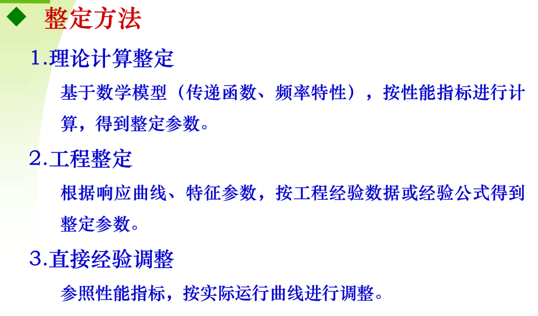 由比例环节决定
分别考虑相位裕度、幅值裕度。
是按照幅值特性整定的。
对象的Nyquist曲线与继电非线性的负倒特性必然相交，系统在整定模 式下存在振荡，其周期可通过对象输出两次过零时间获得。根据对象输出 的一次谐波和输入方波的一次谐波，可获得此时的频率特性幅值。
三大矛盾：
矛盾一： 系统中存在干扰，噪声大，输入信号的频谱不宽：要求系统的带宽要窄，但带宽变窄，干扰抑制的效果变差； 矛盾二： 干扰的频谱宽，干扰量大：即使做到了最大带宽，仍有可能满足不了要求； 矛盾三： 要求系统的频率响应较宽：系统的带宽却做不到。
用快速内回路来抑制扰动；主回路是窄带宽的，抑制噪声或满足稳定性限制约束。
分析干扰范围，设计内回路，其中内回路设计时增益要高，为抑制干扰，内回路的带宽也要尽可能地宽。带宽拓展受到对象不确定性的限制，也不可能做得太高，一般要求满足内回路带宽达到外回路的五倍以上。
内回路带宽达到外回路的五倍以上
应该折中考虑，使二者引起的总误差较小，采用变增益的方法。
以宽带内回路抑制干扰；以窄带外回路保证精度；调试时先调试内回路，再调试外回路；调试外回路时，将内回路当做一个比例环节（反馈回路的逆特性）；每个回路都可以按照单回路进行设计。
过程控制中的多回路控制；对象的主要扰动在输入端。串级调节对于辅助变量之后的扰动无作用。
整个系统包括两个控制回路：主回路和副回路。副回路由副变量检测变送器、副调节器、调节阀和副过程构成；主回路由主变量检测变送器、主调节器、副调节器、调节阀、副过程和主过程构成。 一次扰动：作用在主被控过程上，不包括在副回路范围内的扰动。 二次扰动：作用在副被控过程上，即包括在副回路范围内的扰动。
副回路具有先调、粗调、快调的特点；主回路具有后调、细调、慢调的特点，对副回路没有完全克服掉的干扰影响能较为彻底地加以消除。主、副回路相互配合、相互补充，从而使其控制品质得到进一步提高。
对象的主要扰动作用在输入端；过程控制系统带宽受到限制；存在比较快反映扰动和控制作用的中间变量；主变量和辅助变量都配上相应的调节器，主调节器的输出作为副调节器的设定值。
待标准答案
对于稳态精度要求很高的控制系统，为了减少误差，通常用提高系统的开环增益或提高系统的型别来解决，但做往往会导致系统稳定性变差，甚至使系统不稳定。为解决这个矛盾，常把开环控制与闭环控制结合起来，组成复合控制。这种复合控制有两个通道，一个是顺馈补偿通道，是开环控制；另一个是主控制通道，是闭环控制。系统的输出量不仅由误差值所确定，而且还与补偿信号有关，后者的输出作用，可补偿原来的误差。
既能消除稳态误差，又能保证系统动态性能
在工程中难以完全满足条件G2=1/G3，往往很困难，因为它意味着系统要以极大的速度运动，需要极大的功率，甚至物理不可实现，因此往往使用部分顺馈。
反馈校正虽然在结构上构成了一个回路，但其设计思想本质上属于单回路范畴：它的核心目标并非让内环独立控制某个变量，而是利用内环反馈的数学特性，改造被包围部分的动态特性，从而将原复杂对象重塑为一个性能更优、更易控制的“等效对象”
必须依赖于被控对象的数学模型，开环控制和最优控制中更是需要系统的精确数学模型，而实际的被控对象存在着许多难以建模的因素。
专家控制技术是一种基于知识的控制方法，利用专家系统的推理机制来灵活选用控制方法，实现解析规律与启发式逻辑的结合、知识模型与控制模型的结合，模仿人的智能行为，采取有效的控制策略，从而使控制性能的提升成为可能。 专家控制的设计与实现关键在于针对复杂、多样的控制知识提出有效的知识获取和组织方法，并在技术上实现实时推理。
专家系统所要解决的问题一般没有算法解，并且往往要在不完全、不精确或不确定的信息基础上做出结论
取决于知识量，设计专家系统的关键是知识表达和知识的运用
知识库和推理机

知识库通过人机接口与领域专家沟通，从而实现知识的获取，供推理机使用。 包含多种功能模块：具有知识的存储、查询、检索、编辑、增删、修改和扩 充等功能。
包含三类知识： ①基于专家经验的判断性规则； ②用于推理、问题求解的控制性规则； ③用于说明问题的状态、事实和概念及当前的条件与常识等的数据。
推理机 利用知识库中的知识进行推理来求解专门问题，从而得到结论的“思维”机制。 包含三种推理方式： ①正向推理，从原始数据和已知条件得到结论； ②反向推理，先提出假设的结论，然后寻找支持的证据，若证据存在，则假设 成立； ③双向推理，运用正向推理提出假设的结论，运用反向推理来证实假设。
（1）具有统一的内部知识表示形式，通过学习程序即可获得网络的相关参数。任何知识规则都可变换成数字形式，便于知识库的组织和管理，通用性强。 （2）便于实现知识的自动获取。 （3）利于实现并行联想推理和自适应推理，能够表示事物的复杂关系，如模糊因果关系。
推理是指依据一定的策略和原则由已有的事实推出结论的过程，所依据的策略和原则是推理的核心。推理的过程就是问题求解的过程。
根据知识表示的特点：（1）图搜索方法（2）逻辑论证方法
前者用图、状态空间，后者用谓词逻辑或其他形式逻辑方法
根据问题求解的推理过程中是否运用启发性知识：（1）启发推理（2）非启发推理
根据问题求解的推理过程中特殊和一般的关系（1）演绎推理（Deduction）（2）归纳推理（Induction）
根据问题求解的推理过程中推理的方向（1）正向推理（2）反向推理（3）双向推理
将专家系统的相关技术与自动控制技术相结合，主要包含知识库，控制算法库，实时推理机，信息获取与处理，动态数据库
知识库由事实集和经验数据、经验公式、规则等构成。事实集包括对象的有关知识，如结构类型及特征等。控制规则有自适应、自学习、参数自调整等方面的规则。经验数据包括对象参数变化范围、控制参数的调整范围及其限幅值、传感器特性、系统误差、执行机构特性、控制系统的性能指标，以及由控制专家给出或由实验总结出的经验公式。
存放控制策略及控制方法，如PID、Fuzzy、神经网络控制、预测控制算法等，是直接基本控制方法集。
根据一定的推理策略（正向推理）从知识库中选择有关知识，对控制专家提供的控制算法、事实、证据以及实时采集的系统特性数据进行推理，直到得出相应的最佳控制决策，由决策的结果指导控制作用。
通过闭环控制系统的反馈信息及系统的输入信息，获取控制系统的误差及误差变化量、特征信息（如超调量、上升时间等）；信息处理包括特征识别、滤波等。
用来存放系统推理过程中用到的数据、中间结果、实时采集与处理的数据。
（1）能够满足任意动态过程的控制需要，尤其适用于带有时变、非线性和强干扰的场景； （2）控制过程可以利用被控对象的先验知识； （3）通过修改、增加控制规则，可以不断积累知识，改进控制性能； （4）可以定性地描述控制系统的性能，如超调量小、误差增大等，对控制性能可进行解释； （5）可通过对控制闭环中的单元进行故障检测来获取经验规则。
（1）专家系统能完成专门领域的功能，辅助用户决策，专家控制能进行独立的、实时的自动决策，强调实时性； （2）专家控制对可靠性和抗干扰性有着更高要求； （3）专家系统可采用离线工作方式，专家控制要求在线获取反馈信息，采用在线工作方式； （4）一般专家系统中操作人员是作为系统的组成部分，通过人机对话完成交互，而专家控制将操作人员从系统环路中撤出； （5）专家控制要求与常规的控制器和其他应用软件有良好的接口。
作用：取代常规控制器，直接控制生产过程或被控对象，具有模拟（或延伸、扩展）操作工人智能的功能。
特点：该控制器的任务和功能相对简单，但需要在线、实时控制；知识表达和知识库简单，通常由几十条产生式规则构成，便于增删和修改。
作用：用于和常规控制器相结合，组成对生产过程或被控对象进行间接控制的智能控制系统，具有模拟（或延伸、扩展）控制工程师智能的功能。
特点：该控制器能够实现优化、适应、协调、组织等高层决策，可以在线或离线运行。通常，优化型、适应型专家控制器需要在线、实时、联机运行；协调型、组织型专家控制器可以离线、非实时运行，作为相应的计算机辅助系统。
优化型：基于最优控制专家的知识和经验的总结和运用，通过设置整定值、优化控制参数或控制器，实现控制器的静态或动态优化。 适应型：基于自适应控制专家的知识和经验的总结和运用，根据现场运行状态和测试数据，调整控制规则，校正控制参数，以适应生产过程、对象特性或环境条件的漂移和变化。 协调型：基于协调控制专家和调度工程师的知识和经验的总结和运用，用以协调局部控制器或各子系统的运行，实现大系统的全局稳定和优化。 组织型：基于控制工程组织管理专家或总设计师的知识和经验的总结和运用，用以组织各种常规控制器，根据控制任务的目标和要求，构成所需要的控制系统。
基于被控对象和控制律的各种知识，无需知道被控对象的精确模型，利用专家经验来设计PID参数，属于直接型专家控制器
操作人员实践经验的特点： 定性的语言描述，难于建立精确定量模型； 不需要对象的精确数学模型； 推理过程采用“不精确推理”
确定模糊控制器的输入变量、输出变量和论域； 确定模糊化和去模糊化方法； 确定模糊控制器的控制规则及模糊推理方法； 量化因子及比例因子的选择； 模糊控制算法的程序实现。
理论上说，维数越高效果越好，但受限于设计难度和实现难度，通常采用二维的
信号的实际取值范围称为论域，论域的选择需要经过细心的推敲
将论域离散成确定数目的区间；每个区间赋予特定的模糊标记；针对模糊标记，通过隶属度函数定义相应的模糊集合。量化等级的数目应该足够大以保证充分 的近似度，但会增加设计的复杂性和控制实现时对存储空间的需求。
将精确量转化为模糊量的过程称为模糊化。语言变量的取值称为模糊标记。
模糊控制规则是设计模糊控制器的核心，其建立基于手动控制过程中经过长期实践、不断修正完善的一套有效的控制策略。获取的途径： 基于专家的经验和控制工程知识 基于操作人员的实际控制过程 解析控制规则公式 基于学习产生
模糊推理是设计模糊控制器的关键。
直接推理法 由量化论域中各输入量、输出量求出每条控制规则的模糊关系，再使用模糊关系计算出各输出控制分量，最后计算总输出控制量。 间接推理法 由量化论域中的各输入量、输出量及控制规则求出总的模糊关系，再使用总的模糊关系计算输出控制量。
结果是相同的，但间接法所用时间较少。控制表可事先离线计算，存储在内存中供实时查表使用。
完成实际论域与模糊论域的转换
一般来说，激活的模糊规则越多，越容易取得期望的性能